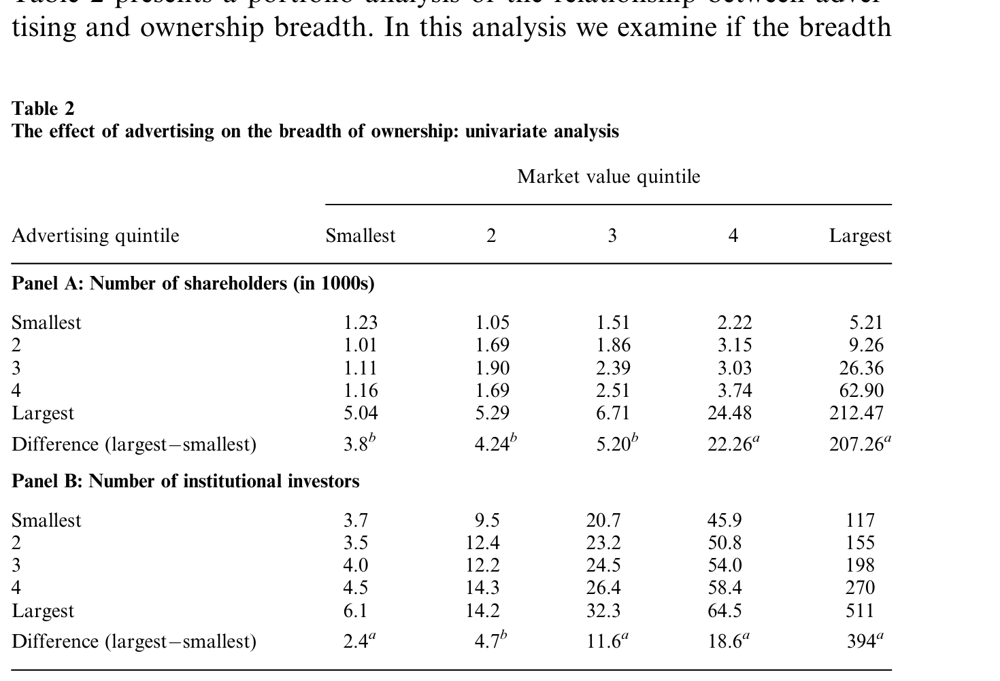
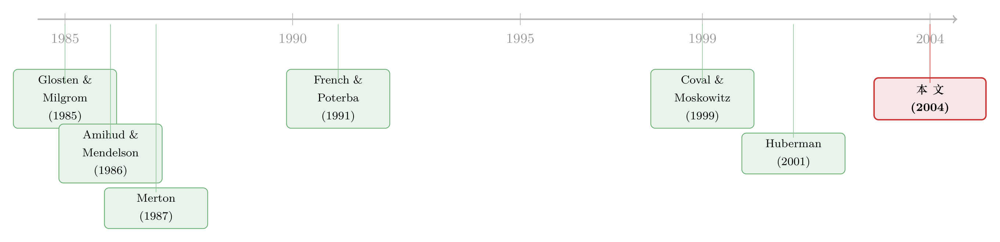

打广告，打的不是产品，是股东——一条从货架通向交易所的暗线
本文读的是 Grullon, Kanatas & Weston (2004, Review of Financial Studies)：一家公司在产品市场上花的广告费，会「外溢」到股票市场——广告越多的公司，股东人数越多（散户尤其多），股票的流动性也越好（价差更窄、价格冲击更小、深度更大）。换句话说，广告买来的不只是市场份额，还有一批「熟脸」投资者，和一份更便宜的资本。
1 一则没有产品的广告
先看两则真实的广告。
一则来自 BASF——一家做企业对企业（business-to-business）生意的跨国化工巨头。它在面向普通消费者的媒体上投广告，却只告诉你一句话：「我们不生产你购买的产品，我们让你购买的产品变得更好（We don't make the products you buy—we make the products you buy better）。」你看完，既不知道它卖什么，也无从去买。
另一则更直白。1998 年 9 月的《经济学人》上，NTT DoCoMo 买下一整版，劈头问读者：「NTT DoCoMo 为什么要在一本美国杂志上打广告？」它自己给出的答案是：「因为 NTT DoCoMo 是在纽约证券交易所上市的、日本第一的移动通信公司。」——后来该公司的人亲口告诉作者，这次广告的主要目的就是吸引新的投资者。
这就有点奇怪了。如果你把广告理解成「刺激产品需求」的工具，那么一则不提产品、甚至不说自己做什么生意的广告，纯属浪费。可它偏偏存在，而且不是个例。于是一个张力浮出水面：广告，会不会其实是打给投资者看的？
著名的富达麦哲伦基金前掌门彼得·林奇（Peter Lynch）有句名言：「买你了解的东西（Buy what you know）」；巴菲特也劝人去买「伟大的品牌」。这些话背后是一个越来越被证据支持的判断：人们在投资时，会系统性地偏向「熟悉」的东西。本文要做的，就是顺着这条线往下追一步——这种「偏爱熟悉」的投资行为，对公司和它的股票，究竟意味着什么？
2 把三件事串成一条暗线
这篇文章真正聪明的地方，是它没有满足于「投资者偏爱熟悉」这个已经被反复记录的行为，而是把它接到了一条因果链上，一口气贯穿到了公司金融最关心的变量——资本成本。
这条暗线只有三环：
第一环：广告 → 可见度。 广告的本职是抢占产品市场，但它的副作用是——至少在最低限度上——让公司的名字、产品被消费者和投资者同时记住。正如 Merton (1987) 所点破的：一个潜在投资者，至少要先「知道」一家公司的存在，才谈得上要不要买它的股票、要不要去搜集更多信息。广告，恰恰干的就是「让你知道」这件最基础的事。所以作者干脆用公司的产品市场广告支出（advertising expenditures），作为「公司在投资者中可见度」的代理变量。
第二环：可见度 → 所有权广度。 如果投资者因为「熟悉」而买入，那么更高的可见度，自然会带来更大的所有权广度（breadth of ownership）——更多的股东。这一步是行为层面的。
但真正关键的一步在于第三环：所有权广度 → 流动性。 这一环是微观结构的。被广告「吸引」来的投资者，依据的是公开的、甚至并不实质的信息（一句广告词而已），因此他们大概率是非知情交易者（uninformed traders），也就是微观结构模型里的「噪声交易者」。而几乎所有微观结构模型都告诉我们同一件事：流动性是非知情交易相对于知情交易之比例的增函数（Glosten & Milgrom, 1985; Admati & Pfleiderer, 1988）。噪声越多，做市商面对的逆向选择（adverse selection）风险越小，于是他愿意报出更窄的价差、更深的盘口。
把三环接起来，结论就反转了我们对广告的直觉：广告不只是产品市场的开支，它还在股票市场里，悄悄替公司降低了交易摩擦。 而既有文献（Amihud & Mendelson, 1986 等）又表明，流动性是被定价的——更好的流动性意味着更低的权益资本成本。于是这则「没有产品的广告」，最终可能通过资本市场这条从未被正视的渠道，抬高了公司的价值。
注意这条链条的「成色」：第一、二环讲的是「熟悉偏好」，第三环讲的是「逆向选择成本」。本文的贡献不在于发明了哪一环，而在于第一次把产品市场的广告，一路接到了股票市场的流动性上——这个外溢（spillover）此前无论学界还是业界都没人认真指出过。
3 识别策略：在「规模」这座大山下找广告的脚印
读到这里，聪明的读者立刻会皱眉：广告多的公司，往往就是大公司。大公司股东多、流动性好，这不是废话吗？广告在这里会不会只是「规模」的影子？
这正是全文识别上的核心难点，作者的应对也都围绕它展开。
先说一个看似技术、实则要命的选择：用广告的「绝对金额」，而不是「广告/销售额」这类比率。 作者的理由很实在：通用汽车（GM）1998 年砸了 $3.7 billion 打广告，这还不到它销售额的 3%；而一家叫 Audible 的小公司只花了 $0.3 million，却占了销售额的 82% 以上。谁的广告能「触达」更多潜在投资者？显然是前者。比率衡量的是「广告占生意的比重」，而本文要的是广告触及人群的「绝对规模」——所以用美元金额才对路。
再说怎么把规模摁住。 在单变量分析里，作者用了一个双重分组（double sort）：先按市值（market capitalization）把样本分成五组（quintile），在每一个市值组内部，再按广告支出分成五组。这样一来，「最高广告组 vs. 最低广告组」的比较，就是在大小相近的公司之间进行的——规模这座大山被分层摁住了。
在多元回归里，被解释变量是股东数（item 100）和机构投资者数，解释变量是广告，控制变量包括市值（吸收规模效应——大公司分析师覆盖多、新闻多、可买的股份也多）、股价的倒数（投资者对价格区间有偏好）等。考虑到所有权与广告的关系可能是非线性的，作者对大多数变量做了对数变换（log-transformation），并采用固定效应（fixed-effects）估计，以缓解离群值和非线性的影响。
这里要诚实：本文是一项关联性（associational）研究，不是一个干净的准实验。它没有外生冲击、没有断点、没有工具变量，识别的全部重量都压在「控制变量是否足够」上。广告很可能是内生的——一家正打算改善投资者关系、或预期要再融资的公司，会同时增加广告并吸引股东。作者自己也提醒：把效应「全部归于可见度」要小心。下文的评论会再回到这一点。
4 数据
- 样本：1993–1998 年的
5,776个公司-年（firm-year）观测。起点选 1993，是因为 TAQ 数据库从那年开始。 - 来源：财务数据取自
Compustat（广告支出 = item 45，股东数 = item 100，等等）；价格、换手率、波动率、公司年龄取自CRSP；机构投资者数取自Compact Disclosure；价差、深度、价格冲击取自TAQ的 NYSE 报告。 - 观测单位：公司-年。
- 关键过滤：只保留披露了广告支出的公司（这一步大幅缩小了样本，因为 Compustat 无法区分「广告为零」和「未披露」）；剔除年均换手率 > 500%、或年均报价价差 >
$5的极端观测。 - 横截面差异之大，值得一提：股东数从
100（5 分位）到42,000（95 分位）；机构投资者数从0到324；相对买卖价差从0.4%到13.7%；换手率从8.9%到182.6%。作者还专门比较了样本公司与「广告缺失」公司（Panel B），发现两者在年龄、收益、股价、波动率上大体相当——意在说明，尽管做了筛选，样本相对于 Compustat 全体并没有严重偏倚。
5 主要结果
5.1 广告先把「股东」买了进来
先看所有权这一端。下面这张双重分组表是全文的「地基」。
在每一个市值组内部，从最低广告组走到最高广告组，股东数和机构数都单调上升；而且无论公司大小，最高广告组的股东/机构数，总是高于最低广告组，差异在统计上和经济上都显著。
具体量级很有冲击力。对最小市值那一组：从最低到最高广告组，平均股东数增加约 3,800 人，机构投资者增加约 2.4 个。对最大市值那一组：同样的广告差异，对应的股东数增加竟高达 207,260 人，机构数增加 394 个（差异在 1%/5% 水平上显著，见表中 a、b 标注）。

Table 2: presents a portfolio analysis of the relationship between adver-
这里藏着一个有意思的不对称：广告对散户的拉动，比对机构强得多。这与「本土偏好（home bias）」类证据一拍即合——广告吸引来的，更多是凭「熟悉感」而非凭「基本面」做决策的人。这恰恰是第三环所需要的「燃料」：一批非知情交易者。（关于「熟悉」如何直接塑造投资组合，可参见《你不是在对冲，你在买你熟悉的东西》；关于散户如何靠「邻居口口相传」选股，可参见《你买的那只股票，多半是邻居「说」给你听的》。）
5.2 然后，流动性跟着变好了
第三环是文章的落点。作者用了好几把不同的尺子来量流动性，互相印证：
- 报价价差与相对价差（quoted / relative bid-ask spread）——成交的直接成本；
- 报价深度（quoted depth）——内侧买卖价上挂出的平均股数，盘口的「厚度」；
- 相对价格冲击（relative price impact）——一笔成交把价格推动了多少，这是逆向选择成本最直接的度量。
价格冲击的构造，是把成交前后中间价的相对变化，乘上一个买卖方向指示变量：
$$\text{Relative Price Impact} = \frac{M_{t+\tau}-M_{t}}{M_{t}}\,Q_{t}$$
其中 \(M_t\) 是买卖中间价，\(Q_t\) 取 +1（买方发起）或 −1（卖方发起），\(\tau\) 取五分钟的时间窗（作者引用 Huang & Stoll 1994、Weston 2000 说明对 5/10/15/30 分钟窗口不敏感）。直觉很清楚：如果一笔买单之后价格立刻上跳、卖单之后立刻下挫，说明市场怀疑下单者「知道点什么」，这就是逆向选择的指纹；冲击越小，意味着市场越把这些单子当成无害的噪声。
结论与预测一致：控制其他因素后，广告支出越高的公司，其股票的买卖价差更低、价格冲击更小、报价深度更大。 三个维度同时指向「更好的流动性」。换言之，第三环被数据点亮了——广告→更多非知情股东→更低的逆向选择成本→更好的流动性，这条逻辑链在横截面上站住了。
（流动性如何通过逆向选择反过来抬高「要求回报」、进而影响资本成本，是这条链最后一环的延伸，可参见《价差是真的，成本却是假的——逆向选择究竟从哪里抬高了「要求回报」》。）
6 文献脉络
把这篇文章放回它生长的土壤，会看得更清楚。它其实是两条河的交汇处。
一条河是市场微观结构。Glosten & Milgrom (1985) 奠定了「价差源于逆向选择」的框架，Admati & Pfleiderer (1988) 进一步刻画了知情与非知情交易者的互动——共同结论是：噪声交易越多，流动性越好。再往前接，Amihud & Mendelson (1986) 证明流动性会被资产价格定价，Amihud, Mendelson & Uno (1999) 又直接发现「股东人数」与股价正相关。这条河告诉我们：所有权广度和流动性，都是有价的。
另一条河是「熟悉偏好 / 投资者识别」。理论的源头是 Merton (1987)：在投资者只「认识」部分股票的不完全信息均衡里，那些不为人熟知的公司，必须提供更高的预期收益、并承受更差的流动性。实证这边则越积越厚：French & Poterba (1991) 记录了投资者过度配置本国股票；Coval & Moskowitz (1999) 发现基金经理偏爱本地总部的公司；Grinblatt & Keloharju (2001) 看到距离、语言、文化都在影响持股；而 Huberman (2001) 第一个明确地把「对一家公司的熟悉」与「买它股票的决策」挂上钩——「熟悉滋生投资（Familiarity Breeds Investment）」。

本文站在这两条河的交汇处，做了一件别人没做的事：它给「熟悉」找了一个可观测、可量化的来源——广告，又把「熟悉」的后果一路推到了流动性。它既给「本土偏好」这类行为加了一份新证据，又把这些「看似次优」的投资者决策，翻译成了对公司实打实的影响。Chen, Hong & Stein (2002) 那一脉「所有权广度影响股票收益」的研究，则正好接在本文的下游。
7 评论与延伸（Q&A + 研究方向）
(a) 几个可能的疑问
Q：这不就是「大公司广告多、流动性也好」的同义反复吗？
作者最担心的也是这个，所以才用「市值五分组内部再按广告五分组」的双重分组，把规模分层摁住后再比广告。表 2 显示，即便在同一市值组内，最高广告组的股东与机构数仍显著高于最低广告组——这说明广告带来的不只是规模的影子。但要强调：这缓解了规模混淆，并不等于解决了广告的内生性。
Q：为什么用广告的绝对金额，而不是「广告/销售」比率？
因为本文关心的是「触达了多少潜在投资者」，这是个绝对规模的概念。GM 砸 37 亿美元（占销售 < 3%）触达的人群，远多于小公司花 30 万美元（占销售 > 82%）。比率衡量「广告强度」，金额衡量「广告广度」——后者才对应「可见度」。
Q：凭什么说被广告吸引来的投资者是「非知情」的？
这是本文逻辑链里未被直接检验的一环，靠的是推理：广告信息是公开且并不实质的（一句口号而已），据此买入的人不太可能掌握私有信息。作者用「广告对散户的拉动强于机构」作为侧面支持。这是全文最该被追问的假设——它是合理的，但不是被证明的。
Q：广告改善流动性，会不会因果是反的——流动性好的公司才敢多打广告？
完全可能。一家正筹划再融资、或正在经营投资者关系的公司，会同时增加广告并改善流动性。本文是横截面关联，没有外生冲击来切断这种反向/共同驱动。这是识别上最大的软肋。
Q：和 Merton (1987) 是什么关系？是验证了它吗？
部分验证。Merton 预测「不为人熟知的公司预期收益更高、流动性更差」。本文不碰预期收益，但证实了它的另一半：更熟悉的股票，股东基础更大、流动性更好。可以说本文给 Merton 的「投资者识别」理论提供了一个产品市场层面的、可观测的驱动力。
Q：广告若真能降低资本成本，公司是不是该「为了股价去打广告」？
本文没有走到这一步——它没有直接证据表明公司意识到广告与流动性之间的联系（NTT DoCoMo 是少见的例外）。作者反而认为，这种外溢在多数情况下是无意的。把它当成一条主动的财务策略来用，证据还不够。
(b) 几个可能的研究问题与提案
1. 把「关联」升级成「因果」：用广告的外生冲击。 - 【经济故事】本文最大的遗憾是内生性。如果能找到一个与公司基本面无关、却外生地改变广告曝光的冲击，就能干净地识别「可见度→流动性」。 - 【可行性】中。候选工具：超级碗（Super Bowl）广告位的准随机分配、电视台广告费率的区域性变动、或竞争对手退出导致的广告「空窗」。需要广告投放的细颗粒数据（如 Kantar/AdSpender）配 TAQ。识别策略为 DiD 或 IV，难点在于找到真正外生的曝光变动。
2. 把场景搬到公司债 / 信用市场。 - 【经济故事】本文讲的是股票。但一家有「全国品牌识别度」的公司，它的债券流动性会不会也更好？信用市场的逆向选择同样存在，而债券投资者中也有大量被动/指数型的「非知情」资金。可见度若能压低债券的逆向选择成本，就直接关系到信用利差里的流动性溢价。 - 【可行性】高。数据齐备：TRACE（债券成交与流动性）＋ Compustat 广告支出 ＋ Mergent FISD。识别仍受内生性困扰，但可借鉴 size-adapted 流动性度量，做横截面与品牌事件研究。这是把本文最自然地往信用市场延伸的方向。
3. 外资持有人是「更熟悉」还是「更陌生」的边际投资者？ - 【经济故事】广告主要在本国媒体投放，本国散户被「熟悉」拉进来；那么外资投资者——天然更「陌生」——会不会对广告的反应更弱？如果广告对本国散户的拉动远强于外资，就能进一步分离「熟悉」机制与「单纯规模」机制。 - 【可行性】中。需要逐国/逐券的外资持股数据（如 FactSet/EPFR 或各国央行托管数据）。识别策略：跨投资者类型的异质反应，控制规模与可投资度。与跨上市、ADR 文献天然衔接。
4. 数字时代，广告的「股东外溢」是否被算法重写？ - 【经济故事】本文样本是 1993–1998 的电视/报刊广告时代。如今广告高度定向、且与社交媒体注意力交织。被精准投放的广告，吸引来的还是「非知情噪声」吗，还是反而带来追涨杀跌的相关性需求？这会改变第三环的符号。 - 【可行性】中低。需要数字广告投放数据＋散户订单流（如券商宕机类自然实验），识别较难，但问题足够新。
8 我的判断
贡献。 这篇文章的价值，几乎全在「接线」二字。它没有发明微观结构，也没有发明熟悉偏好，但它第一个把产品市场的广告，干净地接到了股票市场的所有权广度与流动性上，并指出这是一条此前无人正视的、可能影响公司价值的资本市场渠道。它的结果稳健、多尺度互证、写作克制，是「把一个直觉做实」的范本。
对识别的担忧。 但也必须直说：这是 2004 年的横截面关联研究，识别的全部分量压在控制变量上。广告的内生性没有被真正处理——反向因果（流动性好→敢打广告）和共同驱动（再融资计划同时拉高广告与股东）都无法排除。链条中「被吸引者是非知情交易者」这一关键假设，也只是被合理地假定，而非被检验。所以它能说服我「广告与可见度、流动性强相关」，却还没能说服我「广告导致了流动性改善」。
后续想看到什么。 我最想看到的是两件事：其一，一个外生的广告曝光冲击（超级碗、费率变动、竞争对手退出），把这条关联升级为因果；其二，把这套逻辑搬进公司债与信用市场，看「品牌可见度」是否压低了信用利差里的流动性那一块——若成立，那就把广告从「营销开支」彻底改写成了「资本成本的一个变量」。
参考文献
- Admati, A., and P. Pfleiderer (1988). A Theory of Intraday Patterns: Volume and Price Variability. Review of Financial Studies 1, 3–40.
- Amihud, Y., and H. Mendelson (1986). Asset Pricing and the Bid-Ask Spread. Journal of Financial Economics 17, 223–249.
- Amihud, Y., H. Mendelson, and J. Uno (1999). Number of Shareholders and Stock Prices: Evidence from Japan. Journal of Finance 54, 1169–1184.
- Chen, J., H. Hong, and J. C. Stein (2002). Breadth of Ownership and Stock Returns. Journal of Financial Economics 66, 171–205.
- Coval, J. D., and T. J. Moskowitz (1999). Home Bias at Home: Local Equity Preference in Domestic Portfolios. Journal of Finance 54, 2045–2073.
- Foerster, S. R., and G. A. Karolyi (1999). The Effects of Market Segmentation and Investor Recognition on Asset Prices: Evidence from Foreign Stocks Listing in the U.S. Journal of Finance 54, 981–1013.
- French, K. R., and J. M. Poterba (1991). Investor Diversification and International Equity Markets. American Economic Review 81, 222–226.
- Glosten, L. R., and P. Milgrom (1985). Bid, Ask, and Transaction Prices in a Specialist Market with Heterogeneously Informed Traders. Journal of Financial Economics 14, 71–100.
- Grinblatt, M., and M. Keloharju (2001). How Distance, Language, and Culture Influence Stockholdings and Trades. Journal of Finance 56, 1053–1073.
- Grullon, G., G. Kanatas, and J. P. Weston (2004). Advertising, Breadth of Ownership, and Liquidity. Review of Financial Studies 17(2), 439–461.
- Huberman, G. (2001). Familiarity Breeds Investment. Review of Financial Studies 14, 659–680.
- Kadlec, G. B., and J. J. McConnell (1994). The Effect of Market Segmentation and Illiquidity on Asset Prices: Evidence from Exchange Listings. Journal of Finance 51, 11–35.
- Lee, C., and M. Ready (1991). Inferring Trade Direction from Intraday Data. Journal of Finance 46, 733–746.
- Merton, R. C. (1987). A Simple Model of Capital Market Equilibrium with Incomplete Information. Journal of Finance 42, 483–510.
- Weston, J. P. (2000). Competition on the Nasdaq and the Impact of Recent Market Reforms. Journal of Finance 55, 2565–2598.